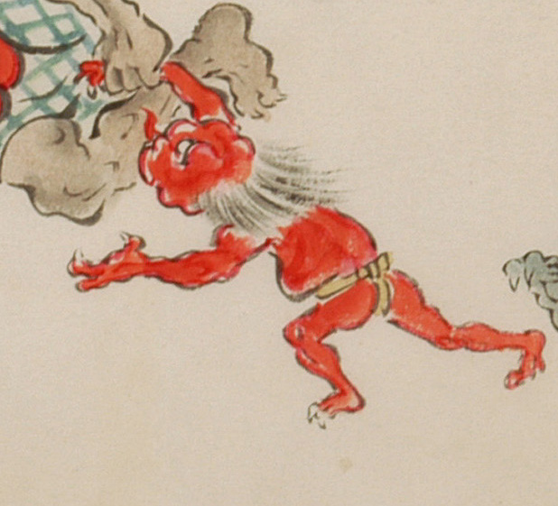

赤い小鬼のような化物。全身は赤く、茶色い褌を絞めている。頭はでこぼこに歪み、髪が逆立って生えている。一つ目のように見え、先の尖った赤い舌を伸ばしている。手足は3本指で、鋭い爪が生えている。右手を入道のような化物にひかれて、左側に向って走っている。
出典：親書誌：U426_nichibunken_0053：化物婚礼絵巻；バケモノコンレイエマキ／日付：2006／資源識別子：U426_nichibunken_0053_0028_0001
Copyright (c)2010- International Research Center for Japanese Studies, Kyoto, Japan. All rights reserved.